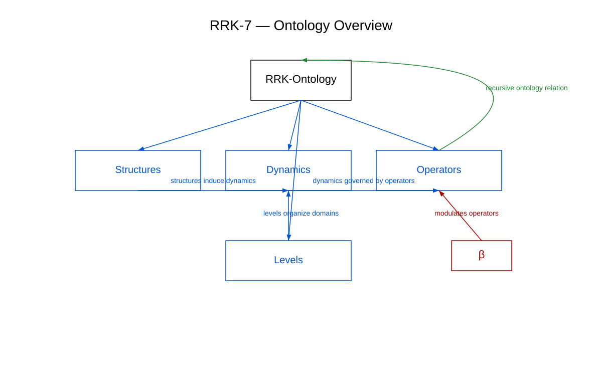

Ontology — Structure of the RRK Framework
The ontology defines the central concepts, relations, and meta‑structures of the RRK framework. It forms the foundation for all further components, models, and figures.
Ontological Overview

Core Concepts
- Recursion — iterative self‑application of a system
- Emergence — new properties arising from structural complexity
- Meta‑Structure — higher‑order organizational layer of a recursive system
- Convergence — structural alignment across iterations
Ontological Subpages
The ontology forms the conceptual foundation of the RRK‑7 architecture, integrating structural, dynamic, and operator‑based layers into a coherent meta‑model.